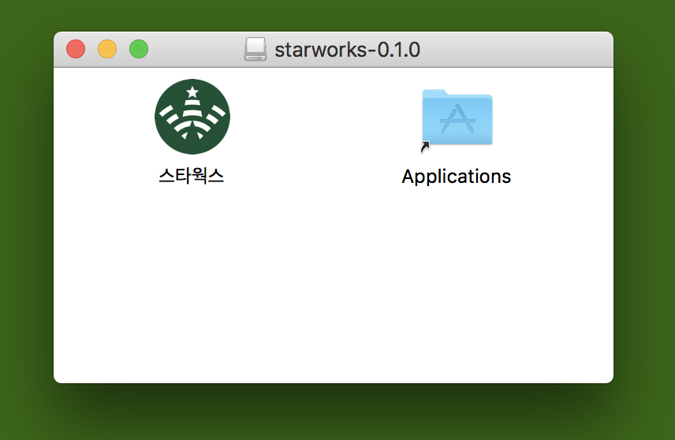
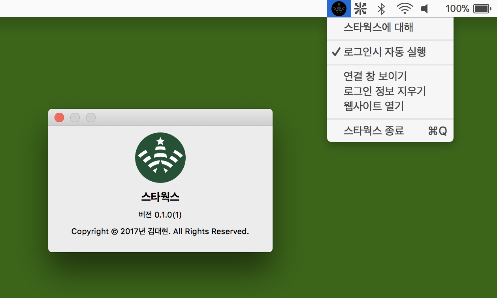
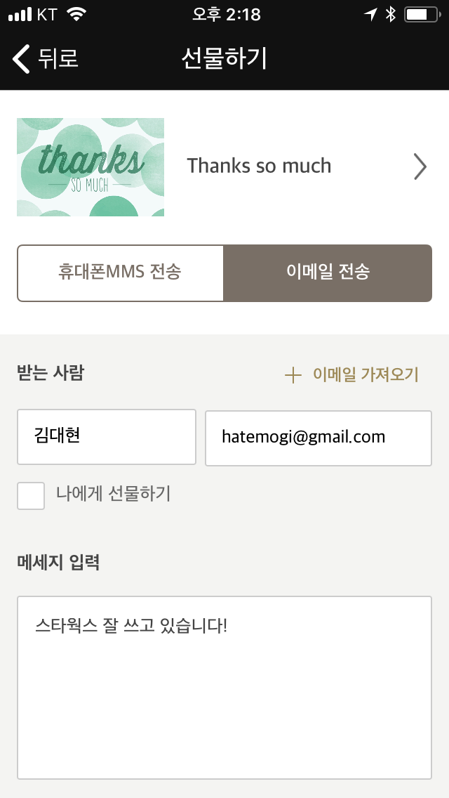

사용법

다운로드 받은 dmg 파일을 열면 위 화면이 보이며, 스타웍스를 /Applications 폴더로 드래그 드랍하고 실행합니다.
시스템 설정에 따라 '열 수 없습니다'메시지가 보이면, 시스템 환경설정 > 보안 및 개인 정보 보호 탭 > 스타웍스 '확인 없이 열기' 버튼을 클릭하면 실행됩니다.
화면 우상단 시계 옆 상태메뉴에 스타웍스 아이콘이 보이면 잘 실행된 것이고, 그 상태에서 'KT_starbucks'에 연결하면 앱이 작동합니다.
자동실행

스타벅스에 자주 가는 경우, "로그인 시 자동실행"을 체크해 두시면 편리합니다.
제거
앱을 제거하시려면, 응용프로그램 폴더에 있는 스타웍스 앱을 삭제하시면 됩니다.
만든이
스타벅스를 사무실 삼아서 일하는 개발자, 김대현이 만든 앱입니다. 그리고, 배영돈님이 멋진 로고 이미지를 창작해주셨습니다. 혹시나 이 앱의 개발 배경이나 과정이 궁금하시다면, 아래 미디엄 글이 재밌으실지도 모르겠습니다.
- (1) 스타벅스 WiFi 연결러 개발 시작
- (2) 스타벅스의 WiFi 네트워크 분석
- (2.5) 오리지널의 의미
- (3) 사파리 익스텐션과 웹킷 인젝션
- (3.5) 프로젝트 재시작 보고
- (4) macOS 앱 개발에 필요한 것
모쪼록, 유용하게 사용하시길 바랍니다.
선물하기
스타웍스는 무료 앱입니다. 개발자 본인이 편하게 쓰려고 만든 앱이고 다른 분들에게도 유용하면 좋겠다는 생각에 공개했습니다. 스타벅스에 자주 가시는 맥러라면 누구나 마음껏 쓰실 수 있습니다. 잘 써 주신다면 그걸로 충분한 보람이 됩니다.
혹시나 너무나 마음에 들어서 제작자에게 선물을 주고 싶으시다면, 스타벅스 e-gift Card를 제 이메일 주소로 보내주시면, 제가 스타벅스 갈 때 커피 한 잔 잘 마시도록 하겠습니다. 이른바 '기프트웨어'라고 불러도 되겠네요.

기프트 카드를 보내주신 분들
김성훈님 이동윤님 김대권님 김보형님
... And your name will be here